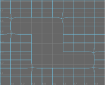

您可以在网格的 polyShape 节点中的“平滑网格”(Smooth Mesh)部分下查看这些属性。
- 平滑网格预览(Smooth Mesh Preview)
-
控制 Maya 如何在场景中显示多边形网格。该网格可以同时显示未平滑和/或完全平滑模式。默认设置为禁用。请参见预览平滑网格。
注： “平滑网格预览”(Smooth Mesh Preview)仅影响场景视图中的多边形网格的显示。如果在启用“平滑网格预览”(Smooth Mesh Preview)时渲染网格，则该网格将在最终图像中以原始未平滑状态显示。要使网格在渲染中以平滑方式显示，可以使用“修改 > 转化 > 平滑网格预览到多边形”(Modify > Convert > Smooth Mesh Preview to Polygons)将平滑预览转化为平滑多边形网格，或者使用将其转化为细分曲面代理。请参见“细分曲面代理选项”(Subdiv Proxy Options)。
- 显示(Display)
-
确定“平滑网格预览”(Smooth Mesh Preview)的显示模式。可以使用以下两种显示模式：
- 框架 + 平滑网格(Cage + Smooth Mesh)
-
按 2 键，可在该模式中显示选定的多边形网格。该网格的原始未平滑版本将显示在线框（框架）中，并同时显示在网格的已平滑着色预览版本中。
“编辑”(Edit)选项仅在“旧版视口”(Legacy Viewport)中指定可以在哪个版本的网格上选择组件（Viewport 2.0 始终允许选择二者）。
- 平滑网格(Smooth Mesh)
-
按 3 键，可在该模式中显示选定的多边形网格。在该模式中，仅会显示网格的平滑预览版本。使用该模式时，可以在平滑预览中选择并编辑组件。
注： 在任一预览模式中编辑网格的组件时，变换操纵器将始终像在网络的原始版本中一样出现在组件的对应位置中。
- 细分方法(Subdivision Method)
-
可让您选择用于在“平滑网格预览”(Smooth Mesh Preview)模式下平滑网格的算法。根据您选择的“细分方法”(Subdivision Method)显示不同的选项。
- 使用全局(Use Global)
-
启用后，Maya 将使用在多边形首选项中设置的“细分方法”(Subdivision Method)（也显示在右侧的圆括号中）。请参见细分方法。禁用此选项可在每个对象的基础上设置“细分方法”(Subdivision Method)。
- Maya Catmull-Clark
-
使用 Maya 的 Catmull-Clark 算法实施平滑网格的面。
有关详细信息，请参见 Maya Catmull-Clark 控件。
注： 在 Maya 2014 和早期版本中，“Maya Catmull-Clark”是默认的细分方法。 - OpenSubdiv Catmull-Clark
- （默认）将统一的细化方案应用于网格的面，同时以相同的量细分整个网格。请参见 OpenSubdiv 概述。
有关“OpenSubdiv Catmull-Clark”选项的详细信息，请参见 OpenSubdiv 控件。
- OpenSubdiv Catmull-Clark 自适应(OpenSubdiv Catmull-Clark Adaptive)
-
对不规则的网格部分应用逐步细化方案。自适应细分仅细化需要其他细节的网格拓扑。它使用 GPU 生成高分辨率网格，可以较高的帧速率进行渲染，而不会影响场景的性能。自适应细分支持高级别细分，并基于摄影机位置调整细分，这样，无论模型离摄影机近还是远，都可以提供平滑的网格。注： 仅 OpenGL 4 和·DirectX11 兼容显卡支持“OpenSubdiv Catmull-Clark 自适应”(OpenSubdiv Catmull-Clark Adaptive)。
- 置换预览(Displacement Preview)
-
默认情况下，“置换预览”(Displacement Preview)处于禁用状态。启用时，将设置以下“平滑网格”(Smooth Mesh)属性：
- 启用“平滑网格预览”(Smooth Mesh Preview)。
禁用“全局(OpenSubdiv Catmull-Clark)”(Global (OpenSubdiv Catmull-Clark))。
将“细分方法”(Subdivision Method)设置为“OpenSubdiv Catmull-Clark 自适应”(OpenSubdiv Catmull-Clark Adaptive)。
请注意，禁用“置换预览”(Displacement Preview)不会将这些属性恢复到其先前的设置。
热键：Alt + 3 可为选定多边形对象启用和禁用“置换预览”(Displacement Preview)。
注： 仅 OpenGL 4 或 DirectX 11 兼容的显卡支持“置换预览”(Displacement Preview)选项。 - 启用“平滑网格预览”(Smooth Mesh Preview)。
细分级别(Subdivision Levels)
- 显示细分(Display Subdivisions)
-
控制网格的平滑预览版本中是否会显示平滑预览中的细分组件。出现复选标记时，将显示细分组件。
- 预览分段级别(Preview Division Levels)
-
控制网格原始版本的细分次数（默认热键为：Page Up 键和 Page Down 键）。滑块范围为 0 至 4 之间的值。默认设置为 2。如果值为 0，则表示无平滑，如果值为 4，则表示该滑块范围内的最高平滑。您可以在文本字段中输入大于 4 的值。
注： 无论何时，只要多边形网格具有相关联的细分曲面代理对象、且已启用“平滑网格预览”(Smooth Mesh Preview)选项，则 Page Up 和 Page Down 热键仅会控制细分曲面代理中的平滑级别。 - 使用预览级别进行渲染(Use Preview Level for Rendering) / 渲染分段级别(Render Division Levels)
-
有关这些属性的详细信息，请参见使用预览级别进行渲染/渲染分段级别。
OpenSubdiv 控件
- 顶点边界(Vertex Boundary)
- 控制如何对边界边和角顶点进行插值。
重要： 当使用“OpenSubdiv Catmull-Clark”细分方法时，角为两个边相交的网格区域。
- 锐边和角(Sharp edges and corners)
- （默认）边和角在平滑后保持为锐边和角。
在以下示例中，边和双边角均为尖锐。

- 锐边(Sharp edges)
- 边在平滑后保持为锐边。角已进行平滑。
在以下示例中，边为锐边，但双边角已进行平滑。
- UV 边界平滑(UV Boundary Smoothing)
- 控制如何将平滑应用于边界 UV。
重要： 当使用“OpenSubdiv Catmull-Clark”细分方法时，角为两个边相交的网格区域。
- 无(None)
- 不平滑 UV。
- 保留边和角(Preserve edges and corners)
- 平滑 UV。边和角在平滑后保持为锐边和角。
在以下示例中，边界边和双边角均为尖锐。
- 保留边(Preserve edges)
- 平滑 UV 和角。边在平滑后保持为锐边。
在以下示例中，边界边为锐边，但双边角已进行平滑。

- Maya Catmull-Clark
- （默认）启用时，平滑不连续边界上的顶点附近的面变化数据（UV 和颜色集）。不连续边界上的顶点将按锐化规则细分（对其插值）。
 注： Maya Catmull-Clark “UV 边界平滑”(UV Boundary Smoothing)会与 Maya Catmull-Clark 控件中的“平滑内部”(Smooth Internal)选项产生相同的结果。
注： Maya Catmull-Clark “UV 边界平滑”(UV Boundary Smoothing)会与 Maya Catmull-Clark 控件中的“平滑内部”(Smooth Internal)选项产生相同的结果。
- 传播 UV 角(Propagate UV Corners)
- 启用后，原始网格中的面变化数据（UV 和颜色集）应用到“平滑网格预览”(Smooth Mesh preview)的角。
- 平滑三角形(Smooth Triangles)
- 启用时，会将细分规则应用到网格，从而使三角形的细分更加平滑。“平滑三角形”(Smooth Triangles)默认情况下处于禁用状态。
- 折痕方法(Crease Method)
- 控制在细分过程中，如何平滑折痕。
- 正常(Normal)
- （默认）不对折痕应用平滑。
- Chaikin
- 插值关联边的锐度，从而生成半尖锐折痕。在细分折痕边之后，结果边的锐度使用 Chaikin 算法确定。此方法可以改进各个边具有不同边权重的多边折痕的外观。
- OpenCL 加速(OpenCL Acceleration)
-
启用时，OpenCL（使用 GPU 执行计算的 API）执行细分。
- 自适应细分级别(Adaptive Tessellation Level)
-
可用于控制应用于自适应细分几何体的细化级别。提高“自适应细分级别”(Adaptive Tessellation Level)可以改进细分的细化程度，平滑网格而不影响场景的性能。仅当启用了“OpenSubdiv Catmull-Clark 自适应”(OpenSubdiv Catmull-Clark Adaptive)时，“自适应细分级别”(Adaptive Tessellation Level)才可用。若要可视化细分，请启用“显示细分”(Display Subdivisions)，然后调整“自适应细分级别”(Adaptive Tessellation Level)。注： 仅在“旧版默认视口”(Legacy Default Viewport)中支持可视化细分。
- 置换类型(Displacement Type)
-
可用于选择显示的置换类型：
注： 该属性在 Viewport 2.0 中不起作用。在这种情况下，置换着色器控制如何显示置换。
- 标量(Scalar)
- （默认）选择此选项时，将显示凹凸贴图。
- 向量(全局空间)(Vector (global space))
- 选择此选项时，将显示向量置换贴图。
注： 仅在全局空间中支持向量置换贴图，切线空间中不支持。
Maya Catmull-Clark 控件
- 边界规则(Boundary rules)
- 通过该选项，可以设置在平滑网格时要将折痕应用于边界边和顶点的方式。
- 旧版(Legacy)
- 不将折痕应用于边界边和顶点。
- 折痕全部(Crease all)
- （默认设置）在转化为平滑网格之前为所有边界边以及只有两条关联边的所有顶点应用完全折痕。
- 折痕边(Crease edges)
- 仅为边应用完全折痕。
- 连续性(Continuity)
-
指定平滑度。
- 平滑 UV (Smooth UVs)
-
对 UV 应用与顶点相同的平滑操作。默认情况下，“平滑 UV”(Smooth UVs)处于启用状态，这样可以为 UV 提供更好的结果。
如果要保持与在旧版 Maya 中创建的场景的兼容性，或者 UV 无需进行平滑但您希望提高性能，则禁用“平滑 UV”(Smooth UVs)。
- 传播边的软硬性(Propagate Edge Hardness)
-
将边的硬度值从原始网格上的任何硬化边复制到平滑网格上关联的新边。默认设置为禁用。
- 映射边界(Map borders)
-
控制“平滑 UV”(Smooth UVs)处于启用状态时如何平滑边界。
- 不平滑(Do not smooth)
-
不平滑边界。
- 平滑内部(Smooth internal)
-
（默认）平滑内部边界。这是默认设置。
- 平滑全部(Smooth all)
-
所有 UV 边界均已平滑。
- 保留(Preserve)
-
指定平滑时哪些组件不受影响。
- 几何体边界(Geometry borders)
-
启用该选项（默认）时，将保留网格的边界边的属性。
- 硬边(Hard edges)
-
保留任何手动硬化或软化的现有边的属性。如果已更改边的硬度或柔和度（或），则启用此选项以保持这些设置。
有关平滑网格预览的注释
- 当“框架 + 平滑网格”的“编辑”(Edit)选项设定为“二者”(Both)时，可能需要更改“平滑网格预览”(Smooth Mesh Preview)的活动和非活动显示颜色，以便更轻松地区分网格的框架和已平滑版本。选择，然后选择“活动”(Active)或“非活动”(Inactive)选项卡，以设定在“颜色”(Colors)首选项窗口的“平滑网格预览”(Smooth Mesh Preview)部分中找到的相关的活动和非活动颜色设置。
- 如果分别或同时为包含 15,000 个多边形的一个或多个网格启用“平滑网格预览”，则系统将显示以下提示消息：“选定网格 <对象名称> 包含大量面，可能需要较长时间来平滑，或者可能内存不足。是否要继续平滑网格预览？”. 该消息指示，如果大量多边形对象中继续使用“平滑网格预览”(Smooth Mesh Preview)，则交互式性能可能会受到影响。您可以使用多种方法修改该警告的触发器。
如果要将默认面限制设定为其他值（如 20,000 个多边形），则可以在命令行中键入以下内容：
optionVar -intValue smpSizeOfMeshForWarning 20000;
或者，也可以通过在命令行中键入以下内容来禁用警告：
optionVar -intValue smpSizeWarningDisabledForAllPolys 1;
若要重新启用该消息，则使用值 0 输入相同的命令。